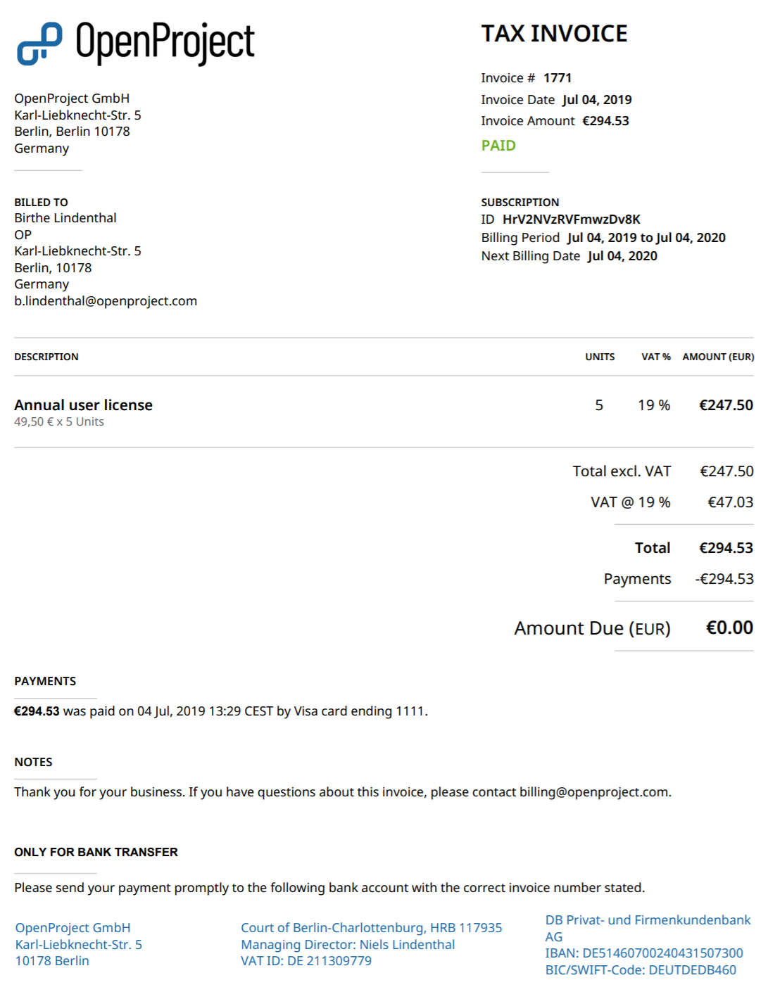
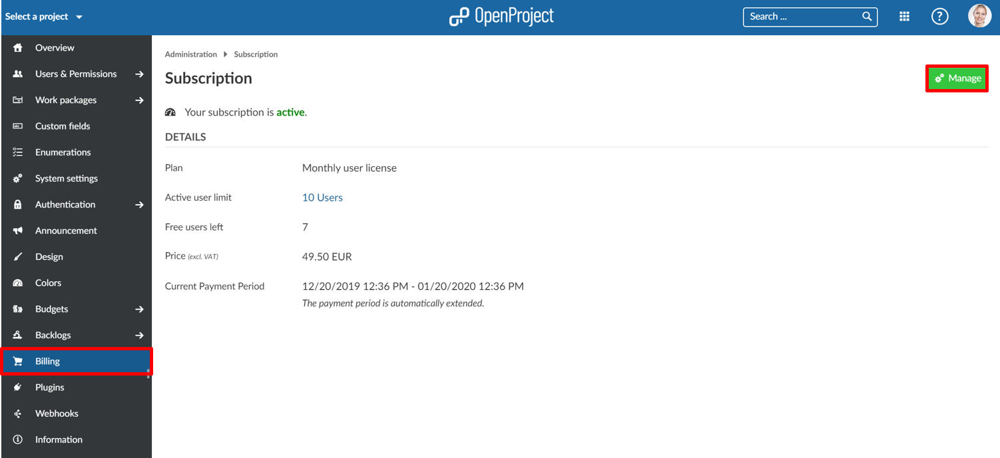
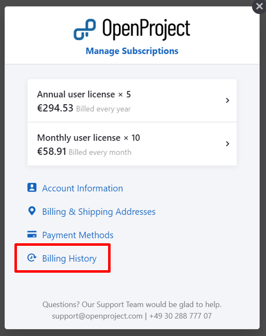
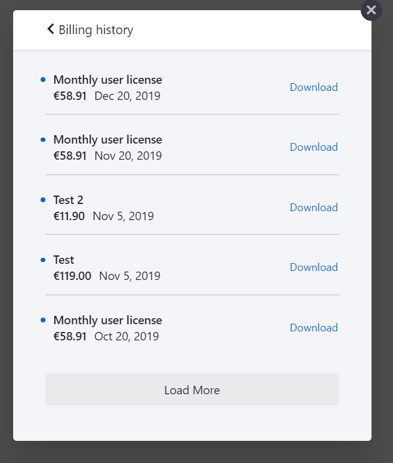

You will receive an invoice for your OpenProject Enterprise cloud edition via email to the email address which you used during the booking process.
The invoice lists the subscription (billing) period as well as the next billing date.
You will also see the payment status. For invoices via bank transfer, the money needs to be paid via bank transfer to the bank account listed at the bottom of the invoice.

If you want to see the billing history or download older invoices of your Enterprise cloud edition, navigate to -> Administration -> Billing within your system’s Administration.
Click the green Manage button at the top right.

In the overlay window, click on the link Billing History.

Here, you will get an overview about all your past payments for the Enterprise cloud edition.
With the Download link you can download the inovices.
The Load more link will open more positions on the list.

Yes, for customers in the EU it is possible to pay by bank transfer (as well as by credit card). To do this, you can sign into your OpenProject environment and select the “Buy now” button from the top menu. You are then directed to the payment page, where you can select the number of users you want to work with and your country. Then you can check the option to pay by invoice and fill out the billing information. You will then receive an invoice from us.
The user may terminate the contract at any time, which will apply by the end of the subscription period (including last day). In case of credit card payment the subscription period is one month or one year; in case of payment via invoice the subscription period is one year. The agreed subscription period will be extended automatically if the contract was not terminated on time.
In case you use the bank transfer payment method please indicate the invoice number. You can find this information in the corresponding invoice (OP…). Otherwise the automatic banking system is not able to detect your payment. Please do not hesitate to contact accounting@openproject.com if you have any further questions.